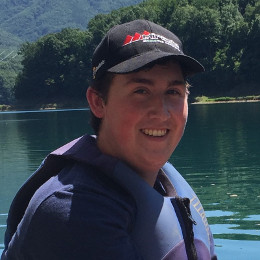

Faculty

Dr. Renato Figueiredo
Professor, ACIS Lab, Department of Electrical & Computer Engineering, University of Florida

Dr. Quinn Thomas
Associate Professor, Department of Forest Resources & Environmental Conservation, Virginia Tech


Researchers, Technician, & Students
Vahid Daneshmand
PhD Student, ACIS Lab, Department of Electrical & Computer Engineering, University of Florida



Dexter Howard
Undergraduate Student, Carey Lab, Department of Biological Sciences, Virginia Tech